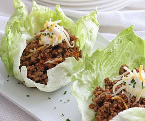

Cooking Time - 25 minutes
Cooking Time - 35 minutes
Cooking Time - 35 minutes
Cooking Time - 25 minutes
Cooking Time - 45 minutes
Cooking Time - 20 minutes.
Cooking Time - 10 minutes
Cooking Time - 35 minutes
Cooking Time - 15 minutes
Cooking Time - 25 minutes
Cooking Time - 15 minutes
Cooking Time - 30 minutes.
Cooking Time - 30 minutes
Cooking Time - 25 minutes

Cooking Time - 45 minutes
Cooking Time - 20 minutes
Cooking Time - 45 minutes
Cooking Time - 20 minutes.
Cooking Time - 50 minutes

Cooking Time - 65 minutes

Cooking Time - 85 minutes
Cooking Time - 25 minutes
Cooking Time - 60 minutes
Cooking Time - 50 minutes.
Cooking Time - 25 minutes
Cooking Time - 195 minutes
Cooking Time - 50 minutes
Cooking Time - 20 minutes
Cooking Time - 95 minutes
Cooking Time - 40 minutes.
Who We Are?
FreshRecipes change the way people eat by having a big impact on how people make decisions on what to cook, buy, and eat. Our users can recommend recipes, keep track and search they've cooked and would like to cook, find their next favourite recipe from a friend, send us your favourite recipes and they will be published, follow chefs and cookbook authors for ideas and much more..
Location:
1234 N Northgate Way, Suite #23, Seattle WA, 98105
Contact Us:
phone: (233) 345-234
e-mail: info@freshrecipes.com
Cream cheese - 1 cup
Whole milk - ½ tbsp
Egg, whole, raw - 6 medium
Spices, paprika - ⅛ tsp
Mustard, prepared, yellow - 1 tsp
Salt - ⅛ tsp
Chives, raw - 2 tsp chopped
Red Peppers, sweet, raw - ½ cup, chopped
Amount per Serving
Calories 100.28 % Daily*
| Total Fat 8.77 g | 13.5 % | |
| Saturated Fat 4.43 g | 22.2 % | |
| Cholesterol 103.17 mg | 34.4 % | |
| Sodium 123.77 mg | 5.2 % | |
| Total Carb 1.39 g | 0.5 % | |
| Dietary Fiber 0.15 g | 0.6 % | |
| Sugars 0.99 g | 2.5 % | |
| Protein 4.02 g | 8 % |
1 can (15 1/2 ounces) black beans, drained and rinsed
1 1/2 teaspoons coarse salt
1/2 large white onion, finely chopped
1 teaspoon minced jalapeno chile
1 1/2 teaspoons minced chipotle in adobo
1 small clove garlic, minced
2 tablespoons plus 1 teaspoon fresh lime juice
2 ripe avocados, pitted and peeled
1/4 cup chopped cilantro
Blue corn tortilla chips, for serving
Amount per Serving
Calories 100.28 % Daily*
| Total Fat 8.77 g | 13.5 % | |
| Saturated Fat 4.43 g | 22.2 % | |
| Cholesterol 103.17 mg | 34.4 % | |
| Sodium 123.77 mg | 5.2 % | |
| Total Carb 1.39 g | 0.5 % | |
| Dietary Fiber 0.15 g | 0.6 % | |
| Sugars 0.99 g | 2.5 % | |
| Protein 4.02 g | 8 % |
1 pound parsnips (about 4)
1 tablespoon extra virgin olive oil
2 teaspoons paprika
Salt and black pepper to taste
Pesto sauce for dipping (optional)
Amount per Serving
Calories 237 % Daily*
| Total Fat 8 g | 13.5 % | |
| Saturated Fat 1 g | 22.2 % | |
| Cholesterol 0 mg | 34.4 % | |
| Sodium 314 mg | 5.2 % | |
| Total Carb 1.39 g | 0.5 % | |
| Dietary Fiber 13 g | 0.6 % | |
| Sugars 11 g | 2.5 % | |
| Protein 3 g | 8 % |

2/3 cup brown basmati rice
1 1/3 cups water
2 tablespoons extra-virgin olive oil
1 pound 93%-lean ground turkey
1 medium onion, finely chopped
1 small red bell pepper, finely chopped
2 tablespoons chili powder, preferably ancho
1 teaspoon ground cumin
1/2 teaspoon garlic powder
1/2 teaspoon salt
1/4 teaspoon cayenne pepper
1 cup canned (or cooked) black beans, rinsed
1/2 cup prepared guacamole
1/2 cup reduced-fat sour cream
12 large leaves Boston lettuce
Amount per Serving
Calories 492 % Daily*
| Total Fat 24 g | 13.5 % | |
| Saturated Fat 1 g | 22.2 % | |
| Cholesterol 77 mg | 34.4 % | |
| Sodium 314 mg | 5.2 % | |
| Total Carb 1.39 g | 0.5 % | |
| Dietary Fiber 9 g | 0.6 % | |
| Sugars 5 g | 2.5 % | |
| Protein 31 g | 8 % |
1 cup baking potato, cubed (large)
1 tablespoon olive oil
1/2 small onion, chopped
2/3 cup red pepper, thinly sliced
2 teaspoons garlic, minced
2 links chicken sausage, sliced
salt and pepper, pinch of each
1/2 cup reduced fat shredded cheddar cheese
2 eggs
For Topping:
buffalo wing sauce, drizzle
1 green onion, sliced
Amount per Serving
Calories 492 % Daily*
| Total Fat 24 g | 13.5 % | |
| Saturated Fat 1 g | 22.2 % | |
| Cholesterol 77 mg | 34.4 % | |
| Sodium 314 mg | 5.2 % | |
| Total Carb 1.39 g | 0.5 % | |
| Dietary Fiber 9 g | 0.6 % | |
| Sugars 5 g | 2.5 % | |
| Protein 31 g | 8 % |

4 cups marinara sauce, warm
4 eggs
1/4 cup parmigiano reggiano (parmesan), grated
1/4 cup mozzarella, grated
1 handful parsley, chopped
1 small loaf crusty bread such as ciabatta
Amount per Serving
Calories 492 % Daily*
| Total Fat 24 g | 13.5 % | |
| Saturated Fat 1 g | 22.2 % | |
| Cholesterol 77 mg | 34.4 % | |
| Sodium 314 mg | 5.2 % | |
| Total Carb 1.39 g | 0.5 % | |
| Dietary Fiber 9 g | 0.6 % | |
| Sugars 5 g | 2.5 % | |
| Protein 31 g | 8 % |
Greens - 1 cup
Romaine Lettuce - 1 cup
Red Onion, diced - 2 tsp
Pecan halves - 8
Gala Apple, cored and thinly diced - 1/4 cup
Dried tart Cherries - 2 tsp
Diced English Cucumber - 1/4 cup
Gorgonzola Cheese, crumbled - 2 tsp
Amount per Serving
Calories 272 g/mg
| Total Fat | 21g | |
| Saturated Fat | 4g | |
| Monounsaturated Fat | 13g | |
| Cholesterol | 7mg | |
| Sodium | 143mg | |
| Carbohydrate | 18g | |
| Dietary Fiber | 3g | |
| Protein 4.02 g | 3g | |
| Sugar | 12g | |
| Protein | 5g |
2 crowns Broccoli, chopped into florets (7 cups)
1/4 Red Onion, thinly sliced
4 1/2 ounces Fresh Blueberries
1/2 cup Dried Cranberries
2/3 cup plain Whole Milk Yogurt
Zest of 1 Lemon
2 tablespoons Fresh Lemon Juice
2 tablespoons Honey
1 teaspoon Kosher Salt
Amount per Serving
Calories 119 g/mg
| Total Fat | 10g | |
| Saturated Fat | 1g | |
| Monounsaturated Fat | 13g | |
| Cholesterol | 0mg | |
| Sodium | 147mg | |
| Carbohydrate | 6g | |
| Dietary Fiber | 1g | |
| Protein 4.02 g | 2g | |
| Sugar | 2g | |
| Protein | 5g |
3/4 cup mayonnaise or salad dressing
1 tablespoon plus 2 teaspoons lemon juice
1 tablespoon plus 2 teaspoons milk
3 medium unpeeled red eating apples, coarsely chopped (3 cups)
3 medium celery stalks, chopped (1 1/2 cups)
1/2 cup coarsely chopped nuts
Salad greens, if desired
Amount per Serving
Calories 119 g/mg
| Total Fat | 10g | |
| Saturated Fat | 1g | |
| Monounsaturated Fat | 13g | |
| Cholesterol | 0mg | |
| Sodium | 147mg | |
| Carbohydrate | 6g | |
| Dietary Fiber | 1g | |
| Protein 4.02 g | 2g | |
| Sugar | 2g | |
| Protein | 5g |
5 cups Spinach leaves
1 large Sweet Potato, cubed
1/2 cup chopped Almonds
1/3 cup dried cranberries
5 oz goat cheese, crumbled
Amount per Serving
Calories 252 g/mg
| Total Fat | 12g | |
| Saturated Fat | 1g | |
| Monounsaturated Fat | 13g | |
| Cholesterol | 7mg | |
| Sodium | 283mg | |
| Carbohydrate | 6g | |
| Dietary Fiber | 7g | |
| Protein 9 g | 2g | |
| Sugar | 2g | |
| Protein | 10g |
3 tablespoons extra-virgin olive oil
2 tablespoons fresh lemon juice
1 teaspoon honey
3/4 teaspoon kosher salt, divided
1/4 teaspoon ground black pepper, divided
Olive oil cooking spray
12 ounces skinless, boneless chicken breast
1 1/2 pounds plum tomatoes, halved, seeded, and quartered
1/2 large seedless cucumber, halved lengthwise and thinly sliced
1/2 small red onion, thinly sliced
3 ounces feta cheese, crumbled
1/3 cup pitted kalamata olives, halved
3 tablespoons chopped fresh mint, divided
4 cups torn romaine lettuce
Amount per Serving
Calories 312 g/mg
| Total Fat | 12g | |
| Saturated Fat | 1g | |
| Monounsaturated Fat | 13g | |
| Cholesterol | 7mg | |
| Sodium | 283mg | |
| Carbohydrate | 6g | |
| Dietary Fiber | 7g | |
| Protein 22 g | 2g | |
| Sugar | 2g | |
| Protein | 10g |

2 tablespoons hot water
2 tablespoons canola mayonnaise
1 1/2 tablespoons olive oil
1 tablespoon fresh lemon juice
1/2 teaspoon anchovy paste
1/4 teaspoon freshly ground black pepper
1 garlic clove, grated
1.5 ounces shaved Parmesan cheese, divided
5 cups thinly sliced stemmed Lacinato kale
1 1/2 cups cooked quinoa
1 1/2 cups chopped skinless, boneless rotisserie chicken breast
2 tablespoons chopped toasted walnuts
Amount per Serving
Calories 344 g/mg
| Total Fat | 16.3g | |
| Saturated Fat | 3.3g | |
| Monounsaturated Fat | 6.9g | |
| Cholesterol | 61mg | |
| Sodium | 487mg | |
| Carbohydrate | 6g | |
| Dietary Fiber | 7g | |
| Protein 22 g | 2g | |
| Sugar | 2g | |
| Protein | 10g |
Spices, chili powder - ½ tsp
Palm kernel oil - 2 tsp
Beef broth cubes - 7 cube
Carrots, raw - 3 medium
Celery, raw - 2 stalk, medium
Garlic, raw - 1 tsp
Onions raw - 1 large
Parsley, raw - 2 tsp
Cooked candied sweet potato - 5 piece
Stewed tomatoes - 1 ¾ cup
Boiled Lentils (without salt) - 1 cup
Amount per Serving
Calories 290.86 g/mg
| Total Fat | 9.62g | |
| Saturated Fat | 5.36g | |
| Cholesterol | 7.17mg | |
| Sodium | 1.9mg | |
| Carbohydrate | 46.6g | |
| Dietary Fiber | 7.48g | |
| Protein 4.02 g | 3g | |
| Sugar | 3.99g | |
| Protein | 6.58g |
1 tablespoon olive oil
1 onion, diced
1 carrot, halved lengthwise and sliced
2 stalks celery, sliced
3 cloves garlic, minced
2 cups chicken or beef broth
2 cups water
1 can (14 1/2 ounces) diced tomatoes, not drained
1 tablespoon fresh basil, chopped
1/4 teaspoon oregano
salt and pepper to taste
1 15 oz. can cannelini or white beans, drained and rinsed
1 cup pasta bows (or other small pasta)
Parmesan cheese (optional)
1 small head escarole (optional)
Amount per Serving
Calories 290.86 g/mg
| Total Fat | 9.62g | |
| Saturated Fat | 5.36g | |
| Cholesterol | 7.17mg | |
| Sodium | 1.9mg | |
| Carbohydrate | 46.6g | |
| Dietary Fiber | 7.48g | |
| Protein 4.02 g | 3g | |
| Sugar | 3.99g | |
| Protein | 6.58g |
2 cups diced parnsips, peeled first
2 cups diced rudabegas, peeled first
2 cups diced turnips
3 cups diced carrots
3 cups diced sweet potatoes, peeled first
4 teaspoons olive oil, divided
salt
pepper
½ yellow onion, diced
2 cloves garlic, minced
1½ teaspoons fresh thyme leaves
1 teaspoon chopped fresh rosemary
1 bay leaves
8-10 cups vegetable stock
Amount per Serving
Calories 290.86 g/mg
| Total Fat | 9.62g | |
| Saturated Fat | 5.36g | |
| Cholesterol | 7.17mg | |
| Sodium | 1.9mg | |
| Carbohydrate | 46.6g | |
| Dietary Fiber | 7.48g | |
| Protein 4.02 g | 3g | |
| Sugar | 3.99g | |
| Protein | 6.58g |
3 tablespoons olive oil
2 tablespoons butter
1 large sweet onion, finely chopped
2 large cloves garlic, minced
2 tablespoons all-purpose flour
2 teaspoons dried basil
2 teaspoons dried thyme
4 cups chicken broth
56 ounces canned crushed tomatoes
2 teaspoons sugar
½ teaspoon kosher salt
½ teaspoon ground black pepper
optional garnish: chopped fresh basil, chives, or dill
Amount per Serving
Calories 290.86 g/mg
| Total Fat | 9.62g | |
| Saturated Fat | 5.36g | |
| Cholesterol | 7.17mg | |
| Sodium | 1.9mg | |
| Carbohydrate | 46.6g | |
| Dietary Fiber | 7.48g | |
| Protein 4.02 g | 3g | |
| Sugar | 3.99g | |
| Protein | 6.58g |

1 tablespoon vegetable oil 1 lb boneless skinless chicken breast halves, cut into bite-size pieces 1 medium onion, chopped (1/2 cup) 1 cup baby-cut carrots, cut lengthwise in half 1 cup Green Giant™ frozen broccoli cuts 1 cup uncooked egg noodles (2 oz) 1 3/4 cups Progresso™ chicken broth 1 can (10 3/4 oz) condensed cream of chicken soup Chopped fresh parsley, if desired
Amount per Serving
Calories 290.86 g/mg
| Total Fat | 9.62g | |
| Saturated Fat | 5.36g | |
| Cholesterol | 7.17mg | |
| Sodium | 1.9mg | |
| Carbohydrate | 46.6g | |
| Dietary Fiber | 7.48g | |
| Protein 4.02 g | 3g | |
| Sugar | 3.99g | |
| Protein | 6.58g |
2 medium onions, finely chopped (2 cups)
2 tablespoons unsalted butter
2 large garlic cloves, minced
1 1/2 tablespoons minced peeled fresh ginger
2 teaspoons ground cumin
1 teaspoon ground coriander
1/8 teaspoon ground cardamom
1 1/2 teaspoons salt
3/4 teaspoon dried hot red pepper flakes
2 (15-oz) cans solid-pack pumpkin
4 cups water
1 1/2 cups reduced-sodium chicken broth (12 fl oz)
1 (14-oz) can unsweetened coconut milk (not low-fat)
1/4 cup olive oil
2 teaspoons brown mustard seeds
8 fresh curry leaves
Amount per Serving
Calories 290.86 g/mg
| Total Fat | 9.62g | |
| Saturated Fat | 5.36g | |
| Cholesterol | 7.17mg | |
| Sodium | 1.9mg | |
| Carbohydrate | 46.6g | |
| Dietary Fiber | 7.48g | |
| Protein 4.02 g | 3g | |
| Sugar | 3.99g | |
| Protein | 6.58g |
Large eggs - 8
Tomatoes - 8 medium
Fresh basil, minced - 2 tsp
Salt, to taste
Black pepper, to taste
Amount per Serving
Calories 178 g/mg
| Total Fat | 10g | |
| Saturated Fat | 3g | |
| Monounsaturated Fat | 4g | |
| Cholesterol | 372mg | |
| Sodium | 499mg | |
| Carbohydrate | 10g | |
| Dietary Fiber | 2g | |
| Protein 4.02 g | 3g | |
| Sugar | 6g | |
| Protein | 14g |
4 tablespoons olive oil
1 onion, coarsely chopped
Salt
4 cloves garlic, minced
2 medium zucchini (about 1 pound), halved lengthwise and thinly sliced crosswise
1 cup frozen corn kernels (4 ounces)
1/4 cup chopped fresh cilantro (optional)
4 (8-inch) flour tortillas
2 cups grated pepper jack cheese
Amount per Serving
Calories 178 g/mg
| Total Fat | 10g | |
| Saturated Fat | 3g | |
| Monounsaturated Fat | 4g | |
| Cholesterol | 372mg | |
| Sodium | 499mg | |
| Carbohydrate | 10g | |
| Dietary Fiber | 2g | |
| Protein 4.02 g | 3g | |
| Sugar | 6g | |
| Protein | 14g |
1 tablespoon butter
1 tablespoon olive oil
1/2 cup chopped chives
3 cloves garlic, minced
2 cups spinach, roughly chopped
2 cups brown rice, cooked
1 cup ricotta cheese
1/4 cup Greek yogurt
1/2 tablespoon chili powder
1/2 tablespoon cumin
2 cups shredded cheese, tossed with 1 tablespoon chili flakes
3 whole wheat tortillas
1 cup salsa
Amount per Serving
Calories 178 g/mg
| Total Fat | 10g | |
| Saturated Fat | 3g | |
| Monounsaturated Fat | 4g | |
| Cholesterol | 372mg | |
| Sodium | 499mg | |
| Carbohydrate | 10g | |
| Dietary Fiber | 2g | |
| Protein 4.02 g | 3g | |
| Sugar | 6g | |
| Protein | 14g |
1 (6-ounce) container plain 2% reduced-fat Greek yogurt
1 tablespoon olive oil
3/4 teaspoon black pepper, divided
1/4 teaspoon kosher salt, divided
4 multigrain flatbreads
1 English cucumber
12 ounces 90% lean ground beef
1 (14.5-ounce) can unsalted Italian-style diced tomatoes
Amount per Serving
Calories 178 g/mg
| Total Fat | 10g | |
| Saturated Fat | 3g | |
| Monounsaturated Fat | 4g | |
| Cholesterol | 372mg | |
| Sodium | 499mg | |
| Carbohydrate | 10g | |
| Dietary Fiber | 2g | |
| Protein 4.02 g | 3g | |
| Sugar | 6g | |
| Protein | 14g |
8 to 10 small waxy potatoes (about 1 ounce each), scrubbed and quartered
1 cup vegetable or another broth; just use salted water if you don’t have it around
1/4 cup olive oil
8 ounces (usually 1 bundle) broccolini, trimmed and halved lengthwise or chopped into 1-inch pieces
1 small red or white onion, thinly sliced
8 large eggs
1 cup (about 3 to 3 1/2 ouncesgrated Parmesan cheese
Salt and freshly ground black pepper, to taste
Amount per Serving
Calories 178 g/mg
| Total Fat | 10g | |
| Saturated Fat | 3g | |
| Monounsaturated Fat | 4g | |
| Cholesterol | 372mg | |
| Sodium | 499mg | |
| Carbohydrate | 10g | |
| Dietary Fiber | 2g | |
| Protein 4.02 g | 3g | |
| Sugar | 6g | |
| Protein | 14g |
1.3 lbs 99% lean ground turkey
1 tsp garlic powder
1 tsp cumin
1 tsp salt
1 tsp chili powder
1 tsp paprika
1/2 tsp oregano
1/2 small onion, minced
2 tbsp bell pepper, minced
3/4 cup water
4 oz can tomato sauce
8 large lettuce leaves from Iceberg lettuce
(optional) 1/2 cup shredded reduced fat cheddar - (7 pp)
Amount per Serving
Calories 178 g/mg
| Total Fat | 10g | |
| Saturated Fat | 3g | |
| Monounsaturated Fat | 4g | |
| Cholesterol | 372mg | |
| Sodium | 499mg | |
| Carbohydrate | 10g | |
| Dietary Fiber | 2g | |
| Protein 4.02 g | 3g | |
| Sugar | 6g | |
| Protein | 14g |
Spices, garlic powder - 1 tsp
Spices, ground black pepper - ¼ tsp
Salt - ½ tsp
Fresh thyme - 1 tsp
Olive oil - ¼ cup
Chicken breast, raw -3 unit, 1 lb
Lemon juice, raw - 2 lemon yields
Lemon peel, raw - 1 tsp
Parsley, raw - ¼ cup chopped
Shallots, raw - ¼ tsp chopped
Amount per Serving
Calories 101.53 g/mg
| Total Fat | 7.87g | |
| Saturated Fat | 1.13g | |
| Cholesterol | 17.04mg | |
| Sodium | 178.38mg | |
| Carbohydrate | 2.07g | |
| Dietary Fiber | 0.32g | |
| Sugar | 0.38g | |
| Protein | 5.99g |
2 teaspoons minced garlic
1/2 cup butter, cubed
6 tablespoons lemon juice
2 teaspoons salt
1/2 teaspoon pepper
1/2 teaspoon hot pepper sauce
5 salmon fillets or steaks (6 ounces each)
Amount per Serving
Calories 101.53 g/mg
| Total Fat | 7.87g | |
| Saturated Fat | 1.13g | |
| Cholesterol | 17.04mg | |
| Sodium | 178.38mg | |
| Carbohydrate | 2.07g | |
| Dietary Fiber | 0.32g | |
| Sugar | 0.38g | |
| Protein | 5.99g |
3 tablespoons soy sauce
1 tablespoon lime juice
1 tablespoon olive oil
1 tablespoon honey
1 teaspoon fresh garlic, chopped or pressed
4 large chicken breasts, whole or sliced
Amount per Serving
Calories 101.53 g/mg
| Total Fat | 7.87g | |
| Saturated Fat | 1.13g | |
| Cholesterol | 17.04mg | |
| Sodium | 178.38mg | |
| Carbohydrate | 2.07g | |
| Dietary Fiber | 0.32g | |
| Sugar | 0.38g | |
| Protein | 5.99g |
4 boneless skinless chicken breast
2 tbsp olive oil
3 tbsp balsamic vinegar
150ml/¼ pint fresh orange juice
150ml/¼ pint chicken stock
2 tsp chopped fresh rosemary leaves
1 tsp light muscovado sugar
knob of butter
orange segments and fresh rosemary sprigs to garnish
boiled rice and green salad to serve
Amount per Serving
Calories 101.53 g/mg
| Total Fat | 7.87g | |
| Saturated Fat | 1.13g | |
| Cholesterol | 17.04mg | |
| Sodium | 178.38mg | |
| Carbohydrate | 2.07g | |
| Dietary Fiber | 0.32g | |
| Sugar | 0.38g | |
| Protein | 5.99g |
2 tbsp olive oil
225g chestnut mushroom, quartered
115g shiitake mushroom, halved
2 large field mushroom, sliced
3 sticks celery, finely chopped
1 onion, cut into thin wedges
2 garlic clove, crushed
300ml red wine
1.2l hot vegetable stock
2 sprigs fresh thyme
150ml port
1 tbsp redcurrant jelly
6 brioche rolls
flatleaf parsley, to garnish
Amount per Serving
Calories 101.53 g/mg
| Total Fat | 7.87g | |
| Saturated Fat | 1.13g | |
| Cholesterol | 17.04mg | |
| Sodium | 178.38mg | |
| Carbohydrate | 2.07g | |
| Dietary Fiber | 0.32g | |
| Sugar | 0.38g | |
| Protein | 5.99g |
1 tbsp olive oil
1 onion, thinly sliced
1 small aubergine, about 250g/9oz, roughly chopped
½ tsp ground paprika
2 garlic clove, crushed
400g can chopped tomato
1 tsp dark or light muscovado sugar
8 large basil leaves, plus a few extra for sprinkling
4 4x175g/6oz firm skinless white fish fillets, such as haddock
Amount per Serving
Calories 101.53 g/mg
| Total Fat | 7.87g | |
| Saturated Fat | 1.13g | |
| Cholesterol | 17.04mg | |
| Sodium | 178.38mg | |
| Carbohydrate | 2.07g | |
| Dietary Fiber | 0.32g | |
| Sugar | 0.38g | |
| Protein | 5.99g |
Porridge oats - 100g
Mixed spice - 1 tsp
Light muscovado sugar - 50g
Butter - 50g
Cox's or russet apples - 7-8 units
Butter - 25g
Golden caster sugar 25g
blackcurrant coulis - 2 tsp
Carton fresh custard - 500g
Carton double cream - 284ml
Amount per Serving
Calories 573 g/mg
| Total Fat | 38g | |
| Saturated Fat | 23g | |
| Carbs | 54g | |
| Salt | 0.3g | |
| Fibre | 3g | |
| Sugar | 21g | |
| Protein | 6g |
Flour -- 1 1/2 cups
Baking soda -- 1 teaspoon
Warm water -- 1/2 cup
Molasses -- 1/2 cup
Brown sugar -- 1/2 cup
Cinnamon -- 1 teaspoon
Ground ginger -- 1 teaspoon
Nutmeg -- 1 teaspoon
Cranberries -- 3 cups
Walnuts or pecans -- 1 cup
Amount per Serving
Calories 573 g/mg
| Total Fat | 38g | |
| Saturated Fat | 23g | |
| Carbs | 54g | |
| Salt | 0.3g | |
| Fibre | 3g | |
| Sugar | 21g | |
| Protein | 6g |
For the marshmallow filling:
6 tablespoons softened butter
1 1/2 cups powdered sugar
1 teaspoon vanilla
1-7 oz. container marshmallow fluff
1 tablespoon milk {if needed}
For the dark chocolate frosting/glaze:
1/4 cup butter
1 1/4 cups dark chocolate chips
2 tablespoons cocoa powder
1/4 cup milk
1 1/4 cups powdered sugar
1 teaspoon vanilla
sprinkles for garnish, if desired
Amount per Serving
Calories 573 g/mg
| Total Fat | 38g | |
| Saturated Fat | 23g | |
| Carbs | 54g | |
| Salt | 0.3g | |
| Fibre | 3g | |
| Sugar | 21g | |
| Protein | 6g |
2 cups plain yogurt - don't use lighter versions
1/2 cup almond milk, or sub another milk
1/2 cup Nesquik chocolate powder
1 teaspoon vanilla extract
2 teaspoons truvia, or sub another sweetener
Amount per Serving
Calories 573 g/mg
| Total Fat | 38g | |
| Saturated Fat | 23g | |
| Carbs | 54g | |
| Salt | 0.3g | |
| Fibre | 3g | |
| Sugar | 21g | |
| Protein | 6g |
1 1/2 cups crushed dark chocolate-and-almond shortbread cookies (about 18 cookies; we tested with Keebler Dark Chocolate and Almond Shortbread Sandies)
2 tablespoons melted butter
2 (4-oz.) semisweet chocolate baking bars, chopped
1 cup whipping cream
4 (8-oz.) packages cream cheese, softened
1 (14-oz.) can sweetened condensed milk
2 teaspoons vanilla extract
4 large eggs
Amount per Serving
Calories 573 g/mg
| Total Fat | 38g | |
| Saturated Fat | 23g | |
| Carbs | 54g | |
| Salt | 0.3g | |
| Fibre | 3g | |
| Sugar | 21g | |
| Protein | 6g |
1 lb fresh strawberries
1 cup water
¼ cup sugar
4 tablespoons coconut milk
⅓ cup pistachios
Amount per Serving
Calories 573 g/mg
| Total Fat | 38g | |
| Saturated Fat | 23g | |
| Carbs | 54g | |
| Salt | 0.3g | |
| Fibre | 3g | |
| Sugar | 21g | |
| Protein | 6g |
Ina Garten

In 1978, Ina Garten found herself working in the White House on nuclear energy policy and thinking, "There's got to be more to life than this!" She saw an ad for a small food store for sale in a place she'd never been: the Hamptons at the end of Long Island. She and her husband drove up to investigate and made the owner an offer on the spot. Two months later she found herself the owner of Barefoot Contessa, a 400-sq. ft. specialty food store.
In 2006, Ina and her business partner Frank Newbold started a successful line of Barefoot Contessa Pantry products, comprised of baking mixes and sauces developed from recipes in her cookbooks.
Ina has been a columnist for Martha Stewart Living magazine, O, the Oprah magazine and House Beautiful magazine.